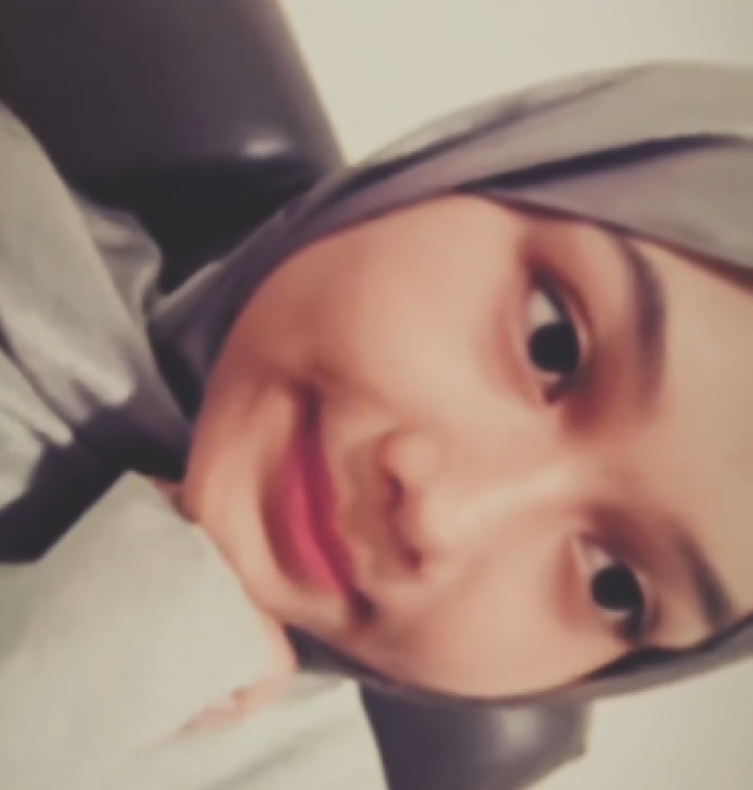
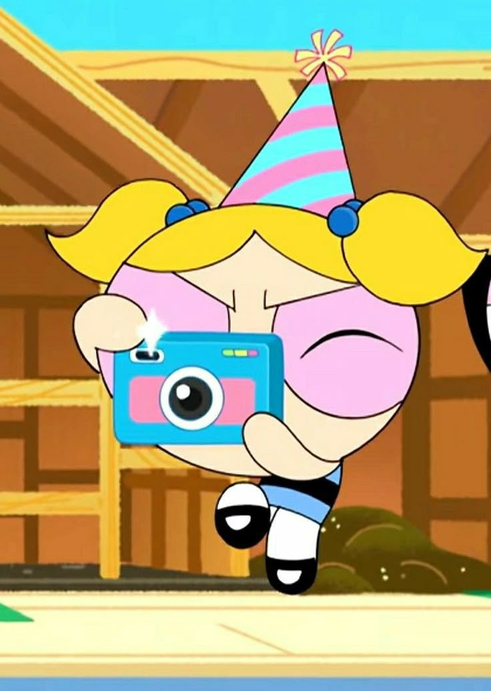
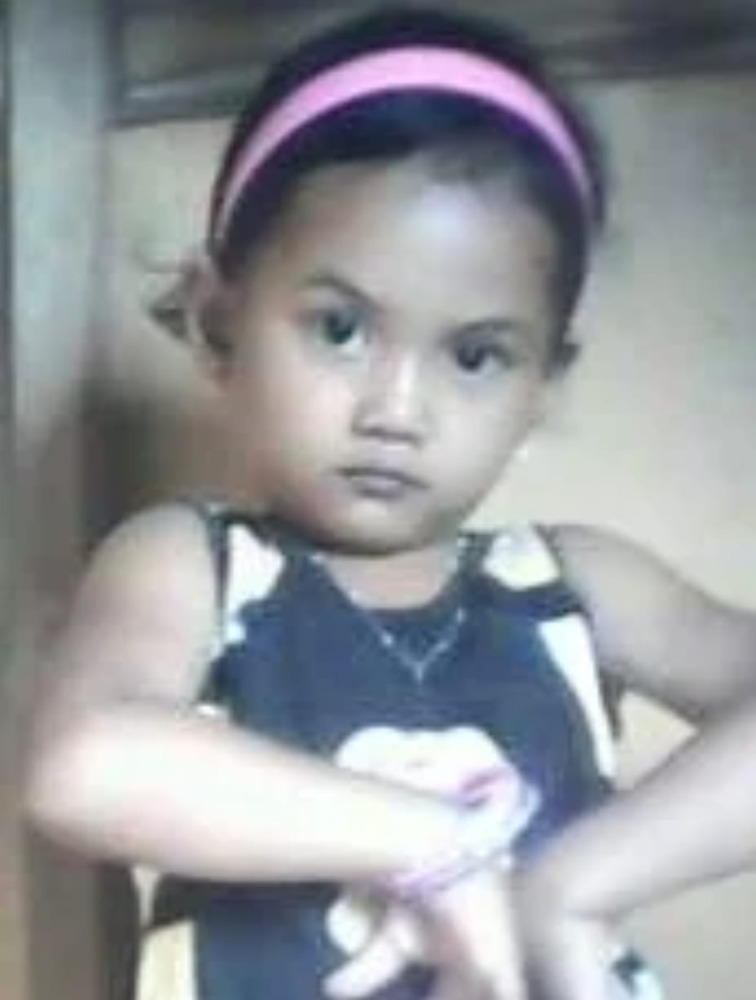
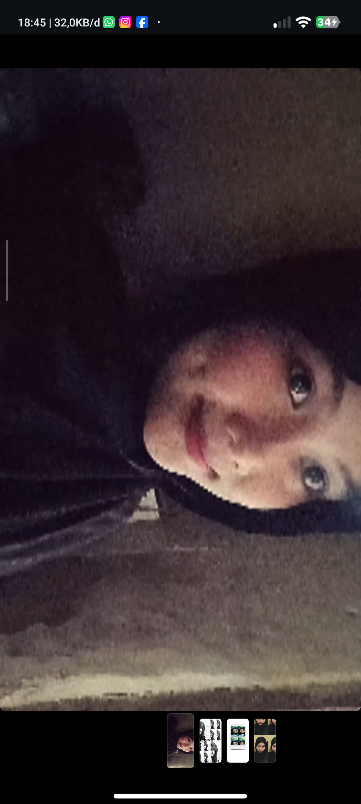
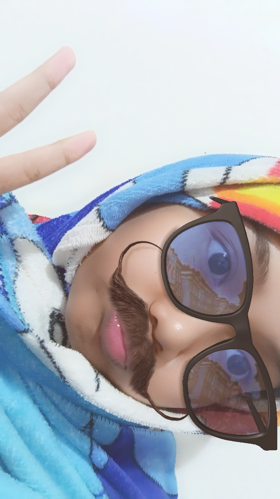
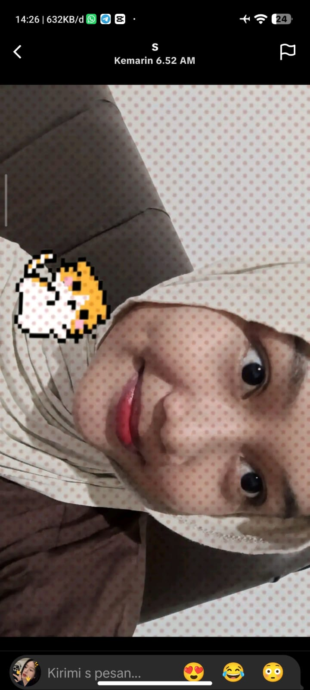
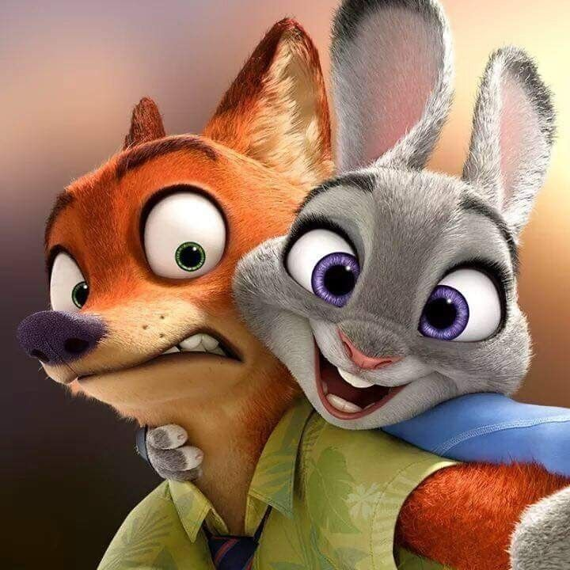

Haiiiii bulannnn i wannna say samtingggg seperti biasaaaa
tekennnn
tekennnn


in this level up day i hopee your dayy full of joyyy kalerfulllllllllll polllllll, ga cumaa hari ini tapi hari hari baik kedepannya harus full happyy goodmood teruss!!!<3


KAMU UDAH NGELEWATIN BANYAK BANGETTT MOMEN MOMEN SELAMA 16 TAHUN INI,dari yang pose semut jutek😏😏 sampe ke PRETTIES GIRLL yang ada lesung pipi yang kiyuttttt ini, jangan lupa ucapin makasih buat orang orang deket kamu selama 16 tahun inii, sama orang tua kamu yang udah mengusahakan semuanya buat anak CANTKK INI, sama ade kamu yang udah jadi temen kamu dirumah, MEREKA BERUNTUNG BANGET BISA JADI MILIK KAMU<3


MAKASIHHH BANGETT KAMU UDAH MAU TEMENAN SAMA AKU, BAHKAN KITA BELOM PERNAH BERTEMU TAPI KENAPA KOK COMFY YH😏😏, makasihh udah jadi orang baik, aku tau kok kamu anak baik pinterr udah berjuang selama 16 tahun ini, long lifee yaaa, dunia masih butuh orang baik cantik bukan cuma paras tapi juga hati kaya kamu,SEHATTT TERUSS KURANGIN TUH COKLATT😏😏. mau cerita dikit ahh😏😏, kamu tau gakkk kamu tuh satu satunya orang yang pernah deket sama aku yang bisa dibilang sikap kamu tuh dewasaa dari sikap atau perbuatan kamu<3 very very lucky aku bisa ketemu sama kamu, dont be stranger yaaa,LOVEEE
